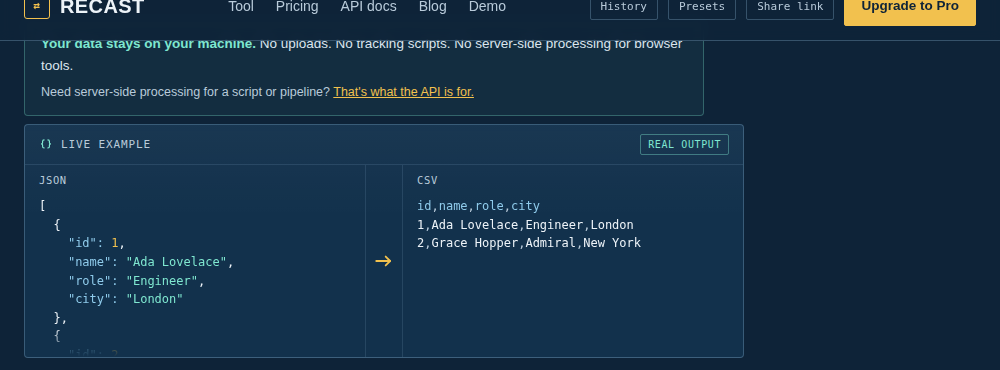
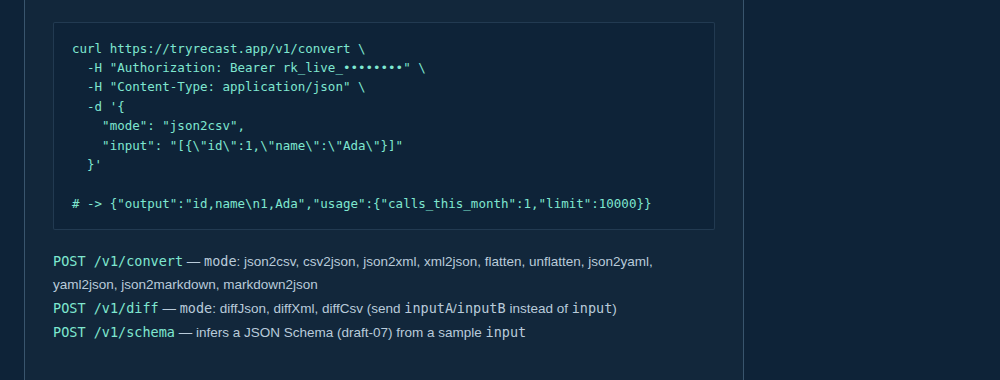

How to use Recast — no coding experience needed
If you've never touched a data file in your life and someone just told you "convert this JSON to CSV," this page is for you. No jargon assumed — we'll explain the words as we go.
What is Recast, in plain English?
Think of Recast as a translator for data files — the same way Google Translate turns French into English, Recast turns one type of data file into another. Computer programs are picky: one system might only understand a format called JSON, while another only reads CSV (basically a spreadsheet saved as plain text). If you've got a file in the wrong format, Recast rewrites it into the format you actually need — usually in under a second.
You don't need to know what "JSON" or "CSV" technically means to use it. You just need to know: "I have a file, and I need it in a different format." Recast handles the rest.

Step-by-step: converting your first file
Tell it what you're starting with and what you want instead
Along the top of the tool is a row of buttons in plain English, like "JSON → CSV" or "CSV → JSON" (the arrow just means "turns into"). Click the one that matches what you have and what you want. Don't worry about getting it wrong — you can change it any time, and nothing is saved or sent anywhere until you say so.

Paste or upload your file, then click Convert
Open your file in a text editor (or just open it and select-all, copy), then paste it into the left-hand box. Prefer not to copy-paste? There's an "Upload" button that lets you pick the file straight from your computer instead. Either way, click the yellow Convert button in the middle, and your result appears on the right almost instantly.

Copy it, or download it as a file
Once you see your result, you've got two options: click Copy to paste it straight into another program, or click Download to save it as a proper file on your computer. That's the whole process, start to finish.
A real example
Say you exported your customer list from an online store as a spreadsheet (CSV), but the system you need to send it to only accepts JSON. Here's what that actually looks like, before and after:
Before — a CSV file, which is really just plain text with commas separating each value:
After — the same information as JSON, which most modern software actually expects:
Same information, same three customers — just written in a shape the receiving system can actually understand. That's the whole job.
Is my data safe?
A completely fair question, especially if you're pasting in something like a customer list or financial data. Short answer: yes. The conversion itself happens entirely on your own device, inside your browser — not on a server somewhere else. Nothing is uploaded, logged, or stored.
The one exception: if a developer on your team uses the API to connect Recast to their own software, that specific request does go to our server to be processed automatically — but a one-off paste-and-convert in your browser never leaves your machine.
Beyond converting: the rest of the workbench
Converting between formats is the most common use, but Recast now covers five stages of working with data — the same five that show up across the site: Inspect, Transform, Validate, Compare, Automate. Here's what each one actually does, in plain terms.
Inspect — understand your data before you touch it
Paste anything in and open Data Inspector (the button sits right above the input box): it automatically counts your records and fields, works out each field's type, tells you how many values are missing, and flags real problems on its own — duplicate IDs, fields that are mostly-but-not-entirely valid emails or dates, values that look suspiciously long. No setup, no schema to write first.
Two more tools live under this umbrella: Graph turns nested JSON into a clickable diagram instead of a wall of text (with a download button, if you want to save it as an image), and Schema looks at a sample and works out the "rules" it follows — useful if you need to describe your data's shape to someone else, or another piece of software.
Transform — reshape your data without writing code
Beyond converting formats, Transform Builder lets you pick fields to keep or remove, rename them, filter records down to the ones you care about, and combine fields into new ones — all by clicking, with a live preview that updates as you go. It's built for the situation where you don't just want a different format, you want a different, smaller, cleaner version of what you already have.
Validate — catch mistakes before they cause problems
Checks your file for errors (like a missing comma or bracket) and tells you exactly where the problem is, instead of just saying "error." Works for both JSON and XML.
Compare — know exactly what changed
Diff takes two versions of the same file (an old one and a new one) and highlights exactly what changed between them, like tracked changes in a Word document. For JSON specifically, Structural Analysis goes a step further: it sorts what changed into fields removed, fields added, values changed, and — the one that actually matters when you're deciding whether to ship something — which of those changes are likely to break whatever reads that data, versus which are safe. It's deliberately cautious: if it can't tell confidently, it says so rather than guessing.
Automate — turn a one-off into something repeatable
Anything you do more than once is worth saving as a Recipe: a named, ordered list of steps you can re-run in one click. Recipe Builder 2.0 makes this visual — build the whole chain from Input through to Output, reorder steps by dragging them, preview the result after any individual step (not just the final one), and edit a step without rebuilding the recipe from scratch. Once saved, the same recipe can be run from the API or the command line too, so a workflow you built by clicking can end up automated somewhere else entirely.
All of these work the same way: pick the tool, paste your data, click the button. The Demo page is the fastest way to see any of them in action — it's organized around these same five stages, with a real dataset ready to load for each one.
Using the API playground
This part is more technical, and it's genuinely optional — most people never need it. It's for one specific situation: you (or someone on your team) wants your own software to convert files automatically, without a person copying and pasting each time.
In plain terms: instead of a person using the website, another computer program sends Recast a file and gets the converted result back automatically — the same conversion, just requested by code instead of a click.

If you do have a developer who wants to wire this up, they can find the exact technical details — request formats, authentication, and code examples in several languages — in the full API documentation further down the main tool page.
Ready to try it yourself? Start with a ready-made sample file — no need to have your own data ready. Or jump straight into the tool with your own file.